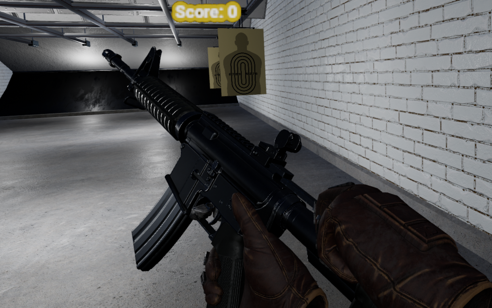

BallisticLab_VRProject
พัฒนาโปรเจกต์ VR สำหรับมหาวิทยาลัยร่วมกับ Parith Arunmanakul (Camerize69) โดยใช้ Unreal Engine 5.6
MY CONTRIBUTIONS
รับผิดชอบการออกแบบและวางระบบเกมยิงเป้าเคลื่อนที่ด้วย Blueprints รวมถึงระบบ Widget
Project notes & credits
ทำโปรเจกต์นี้ร่วมกับ Parith Arunmanakul (Camerize69) สามารถดูไฟล์โปรเจกต์และโค้ดประกอบได้จาก repository ด้านบน